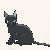

|
 | Az a vád éri a nemzeti oldalt
(legalábbis azok részérõl, akik úgy tesznek, mintha az egyenlõ lenne a nálunk alig létezõ
szélsõjobboldallal vagy elhiszik ezt a dõreséget), hogy antiszemita. A szó
etimológiájába fölösleges is lenne belefúrni magunkat, egyébként is ostobaság
szemitaellenesnek (~antiszemitának) lenni, mert az arab is szemita népcsoport, õk meg
most kényszeredetten velünk vannak, tudjuk, ugye. Beszéljünk hát egyértelmûen: azt mondják,
hogy mi zsidógyûlölõk vagyunk, azaz minden zsidót utálunk alanyi jogon, mert õ zsidó.
Azért, mert annak született, mert nagy az orra, nincs fülcimpája és tud
repülni.
Más válasz nincsen, meg egyébként is szeretik azt hangoztatni (érdekes
módon éppen azok, akik vallása vagy identitása a legkirekesztõbb), hogy bármit utálni
tilos. Bár utálnak történelmi személyiségeket, politikai ideológiákat, meg egyébként is
mindent, ami nem pontosan olyan, amilyennek õk akarják.
Szerintük a nemzeti
radikálisok minden zsidóban a trianoni békediktátumot kierõszakoló zsidó embereket, rajtuk
kívül pedig Rákosikat, meg Kun Bélákat látnak, de a sort hosszan lehetne folytatni, mert
bûnös zsidóból mindig van elég. Úgy vélik, hogy mi minden zsidót utálunk a kollektív
bûnösség elve alapján.
A kollektív bûnösségben egyébként van ráció. Éppenséggel a
jelenleg elõítéletnek nevezett evolúciós csodát utóítéletnek kellene neveznünk: amikor az
õsember megette a pöttyös kalapos gombát, aztán földobta a talpát, a többiek nem ettek többé
olyan gombából, mert utóítélték, hogy az halálos lehet. Az ilyen
„elõítéleteket” tapasztalatnak nevezzük, és nélkülük jelenleg nem létezne az
emberiség.
Azt azonban látni kell, hogy az ember képes a hibásan rögzült ítéleteit
fölülírni vagy megváltoztatni a véleményét, ha annak tárgya változik és ez szükségessé
válik. Viszont hazugok azok, akik azt mondják, hogy bárki a bõre színe miatt utál valaki; ez
ostobaság, rasszjegyeket lehet visszataszítónak tartani, de ezért nem utálunk valakit,
ahogyan azért sem, ha közel ülnek egymáshoz a szemei, markáns álla van vagy ferde
orrnyerge. Rossz véleményünk lehet róla, de nem utáljuk. Az idegengyûlöletnek teljesen más
okai vannak, csak éppenséggel az idegeneket általában megkülönböztetõ jeleikrõl lehet
fölismerni.
Az idegentõl való félelem természetes: ha egy közösségbe új tagok érkeznek,
a velük szemben való óvatosság nemcsak természetes, de szükségszerû is. Csak a XX. században
járt az ilyesmiért verbális támadás.
Ha egy csoportra jellemzõ tulajdonságot fedezünk
föl, hajlamosak vagyunk – lustaságból és leegyszerûsítésbõl is – az egész
csoportra jellemzõvé tenni az adott dolgot. Így lett a nyugaton a magyarságból gulyászabáló
cigány, de így születtek meg a zsidóviccek is. Valójában nem minden magyar szereti a
gulyáslevest, ráadásul komoly tévedés összemosni két különbözõ nemzetséget, és így az is
igaz, hogy nem minden Grünwald adná el az anyját aprópénzen. Amikor azt mondjuk, hogy
„ezek az inuitok mind eszkimópuszival csókolódznak” senki nem gondolja azt, hogy
nem lehet köztük olyan, aki nem így tesz. Csak nem mondjuk, mert ez magától
értetõdik.
Azonban azt is látnunk kell, hogy a nemzeteket egymástól megkülönböztetõ
kulturális és rasszjegyek néhol ellentéteket szülhetnek. Ahogyan nem illik a vallások között
rangsort tenni vagy az egyiket „jobbnak” nevezni egy másiknál, akképpen nem
mondhatjuk egyetlen kultúrára sem (kivált, ha az ezer évek óta létezik és formálódik), hogy
kevésbé kívánatos a jelenléte a Földön, mint egy másiké. Az össze nem illõ kultúrákat
azonban – mindkettõ védelmében – izolálni kell egymástól. Nevezetesen az
asszimilációra képtelen kultúrát máshová kell irányítani abból a triviális okból, hogy veszélyt
jelent a többségi társadalomra. A rendszerváltáskor (egyesek szerint bosszúból) Romániából
betelepített és betelepedett oláh cigányokat nem lehet megtûrnünk tovább, de a Náci
Németországban is a zsidókkal szemben is élt Göbbels Madagaszkár terve, amely a nemzetközi
zsidóságot Madagaszkár szigetére szorította volna. Hitler ezt támogatta, errõl van írásos
bizonyíték szemben a gázkamrás kivégzések engedélyezésével.
Ha egy ilyen kultúrának
némely tagja nem is jelent veszélyt, nincsen mód és lehetõség kockáztatni, mert a többségi
érdeknek mindig az egyén érdekei fölött kell állni (erre épül az eredeti demokrácia is,
amelynek az eltúlzásos változata nagy divat a mai Európában). A kollektív bûnösség
feltételezi a nemzettudatot, a nemzettestvériség spiritualizmusának megértését és
elfogadását. Nevezetesen Magyarországon a magyar emberek felelõsek Magyarország nemzetközi
helytállásáért és színvallásáért.
Minden idegen kultúra elsõ kézbõl az anyaországról
szerzett tudásának segítségével helyez skatulyába (a fönt említett utóítélet segítségével)
egy népcsoportot. A magyarok a szomszédos országokba kiözönlött cigányok miatt lopásra
hajlamos népnek tûnnek, míg Amerikában megkérdezhetik, hogy ismerjük-e a
DVD-lejátszót.
Ahol még él a nemzettudat, amely a csoportok túlélését szolgáló
természetes ösztönbõl táplálkozik, biztonságot és erõt ad, ott létezik egyféle
koherenciaerõ, amely felelõsségérzettel társul. A kettõs állampolgárságról szóló 2004-es
népszavazás után és azóta is több jobboldali publicista és magánember kért megbocsájtást a
székelyektõl és más külhonba szakadt hazánkfiaitól a magyarság nevében, kiemelve, hogy az igenlõ
szavazat ellenére személyes felelõsségét is érzi és szégyelli magát. A kollektív bûnösség
tehát egy olyan csoporton belül értelmezhetõ, amely tagjai felelõsséget vállalnak egymásért,
ismerik és elismerik a csoportosulást, amelynek tagjai.
Szlovákia Bene¹-dekrétuma és
a magyarság kollektív bûnössége érdekes kérdést vet föl. Vajon lehet-e a magyar nép egésze,
valamennyi magyar egyszerre bûnös bármiért? Lehet-e hibáztatni valamennyi franciát a
trianoni döntés miatt, hiába van a HVIM-nek francia alakulata?
A zsidóság
terméskõként áll a nemzetek között, konspirációkig dagadó összetartása legendásan híres és
ismert. A fönti eszmefuttatás szerint tehát bizonyos értelemben minden olyan zsidó, aki a
zsidó lélek, a hücpe szerint él és követi a zsidó tanokat, felelõs a nemzetközi zsidóság
esetleges világbefolyásának következményeiért. A zsidóság egyébként is hisz a kollektív
bûnösségben, legalábbis más nemzeteket nagyon könnyedén kiált bûnösnek. Elég csak a II.
világháborús emberszappan bármilyen alapot nélkülõ legendája kiagyalójának, Simon
Wiesenthalnak azon kijelentésére gondolnunk, hogy „valamennyi zsidónak meg kell õriznie a
szívében egy kis gyûlöletet a német nép számára”. Mivel Magyarország a vereséget
szenvedett hatalmak oldalán lépett be a háborúba, értelemszerûnek tûnik, hogy egyes
zsidókban a bûnrészesség vádja mellett megfogalmazódott a magyar nép egészének bûnössége is,
és megõriznek egy kevéske gyûlöletet a számunkra. A bûnöst pedig meg szokás büntetni
valamilyen módon.
Nem újkeletû a zsidóság bosszúszomja, hiszen majd' valamennyi zsidó
vallási ünnep egy-egy bosszúállás emléke: elég csak a purimkor fogyasztott Hámán füle nevû
süteményre gondolni. Ahogyan arra a Héber Egyetem már rámutatott, maga Sir Isaac Newton, akit
katolikusnak mondanak, holott a zsidósághoz erõsen köthetõ újjászületett pünkösdi keresztény
volt, kijelentette egy 1704-ben kelt levelében, hogy 2060-ban elpusztul a világ és
„elpusztulnak a bûnös nemzetek, vége lesz a sírásnak és a szenvedésnek, a zsidók
visszatérnek a fogságból, és ismét létrehozzák virágzó és örök királyságukat”. Már itt
is elhangzik egész nemzetek bûnösnek bélyegzése, de ez nem is csoda: a kirekesztettséget
hitbeli okokból vállalók természetszerûleg ellenségesnek érzik azt a nemzetet, amelybe ékként
szorulva élnek.
Látjuk, hogy a kollektív bûnösségben általában hisz a zsidóság, és ez
is elõítélet. Érdemes tehát átgondolnunk, miért érik olyan agresszív és dühtõl torzult
támadások az olyan kijelentéseket, amelyek egyes történelmi vagy gazdasági eseményben,
jelenségben a zsidó emberek felelõsségét firtatnák. Azért, mert attól félnek, hogy fény
világlik a zsidóság társadalmi arányához képest eltúlzott részvételre a politikában és
gazdaságban, ez pedig fölvetheti kollektív bûnösségüket a jelenlegi háborúk és válságok
kapcsán.
Mi pedig néhányak számára bûnös nemzet maradunk, amely nemzet ereklyés
zászlaját tegnap este a Szabadság téren leszakították, majd darabokra tépték, a földre
dobták és megtaposták. A két kultúra eltérõ, mégis egy helyen élnek. Meddig mehet ez így
még?
| | vissza a fõoldalra |  |
| 1 2 3 4 5 6 | |  | | | | | | | | | | 

|
| | | | | | | | | | | | 1 2 3 4 5 6 | |
|


túraszervezõ
túra-rss
mi ez?

legjobbak
legolvasottabbak
tartalomjegyzék
rss feed

AboryM
Caesar
Count Grishnackh
cscsabi
eürdüngh
Feki
GyalogKakukk
Ishukone
Kadzseszka
LACI1993
Mini
Muska
Rommel
Segi
Takezó
tommylee
vikcee
|